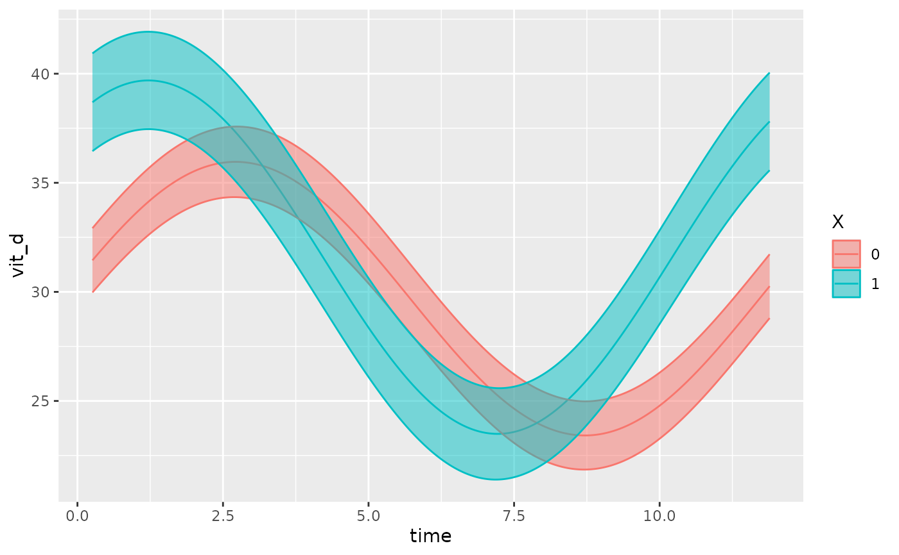
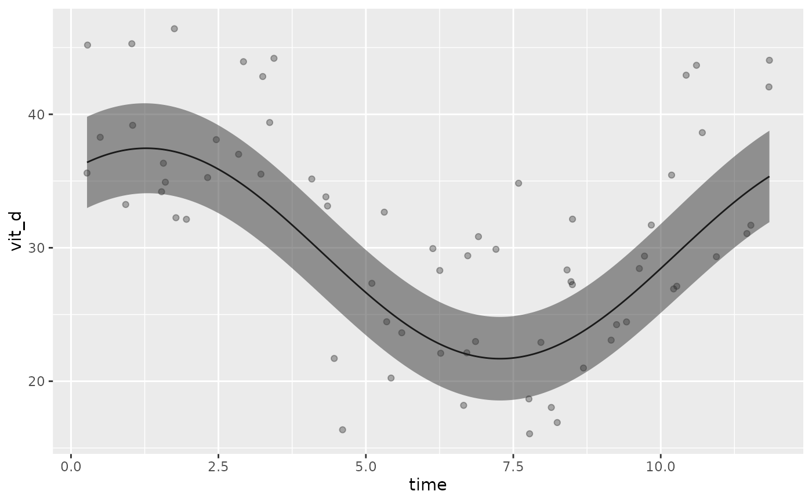

Given a cglmm model fit, generate a plot of the data with the fitted values. Optionally allows for plotting by covariates
Usage
# S3 method for cglmm
autoplot(
object,
ci_level = 0.95,
x_str,
type = "response",
xlims,
pred.length.out,
points_per_min_cycle_length = 20,
superimpose.data = FALSE,
data_opacity = 0.3,
predict.ribbon = TRUE,
ranef_plot = NULL,
cov_list = NULL,
quietly = TRUE,
...
)Arguments
- object
An
cglmmobject.- ci_level
The level for calculated confidence intervals. Defaults to
0.95.- x_str
A
charactervector naming variable(s) to be plotted. Default has no value and plots all groups.- type
A
characterthat will be passed as an argument topredict.cglmm(), specifying the type of prediction (e.g, "response", or "link"). See?glmmTMB::predict.glmmTMBfor full list of possible inputs.- xlims
A vector of length two containing the limits for the x-axis.
- pred.length.out
An integer value that specifies the number of predicted data points. The larger the value, the more smooth the fitted line will appear. If missing, uses
points_per_min_cycle_lengthto generate a sensible default value.- points_per_min_cycle_length
Used to determine the number of samples to create plot if
pred.length.outis missing.- superimpose.data
A
logical. IfTRUE, data from the original data used to fit the model (object) will be superimposed over the predicted fit.- data_opacity
A number between 0 and 1 inclusive that controls the opacity of the superimposed data. (Used as the
alphawhen callingggplot2::geom_point()).- predict.ribbon
A
logical. IfTRUE, a prediction interval is plotted.- ranef_plot
Specify the random effects variables that you wish to plot. If not specified, only the fixed effects will be visualised.
- cov_list
Specify the levels of the covariates that you wish to plot as a list. For example, if you have two covariates: var1, and var 2, you could fix the level to be plotted as such
cov_list = list(var1 = 'a', var2 = 1), where 'a' is a level in 'var1', and 1 is a level in 'var2'. See the examples for a demonstration. If not specified, the reference level of the covariate(s) will be used.points_per_min_cycle_lengthis the number of points plotted per the minimum cycle length (period) of all cosinor components in the model.- quietly
A
logical. IfTRUE, shows warning messages when wrangling data and fitting model. Defaults toTRUE.- ...
Additional, ignored arguments.
Examples
# A simple model
model <- cglmm(
vit_d ~ X + amp_acro(time, group = "X", period = 12),
data = vitamind
)
autoplot(model, x_str = "X")

# Plotting a model with various covariates
test_data <- vitamind[vitamind$X == 1, ]
test_data$var1 <- sample(c("a", "b", "c"), size = nrow(test_data), replace = TRUE)
test_data$var2 <- rnorm(n = nrow(test_data))
object <- cglmm(
vit_d ~ amp_acro(time, period = 12) + var1 + var2,
data = test_data
)
autoplot(object,
cov_list = list(
var1 = "a",
var2 = 1
),
superimpose.data = TRUE
)
